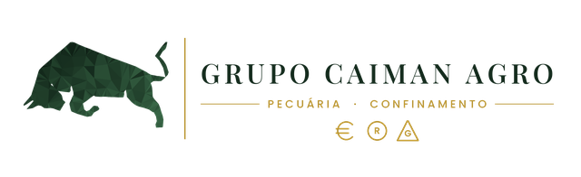

BIA
Entre com o mesmo usuário e senha do app.
Entrar
Digite seu PIN
O mesmo PIN do app.
Esqueci o PIN — entrar com a senha
BIA
● Ao vivo
Atualizar
Pronta
Oi, chefe! Toque no microfone e fala comigo, ou escreve aqui embaixo.
Fechar
v2026.11.09-compacto